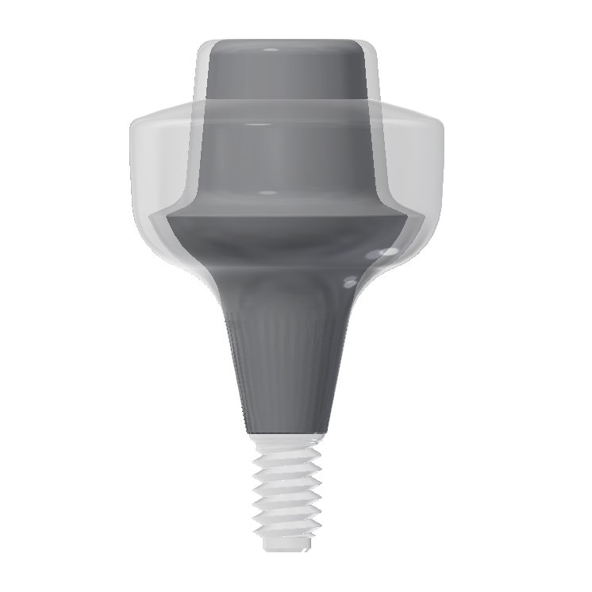
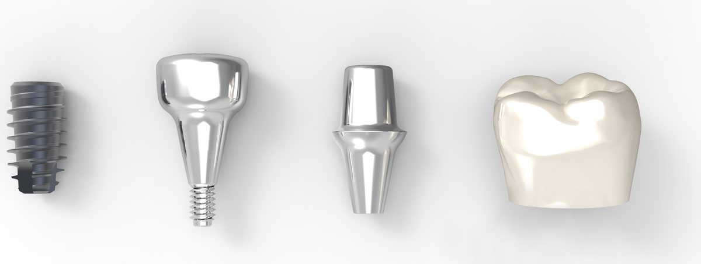
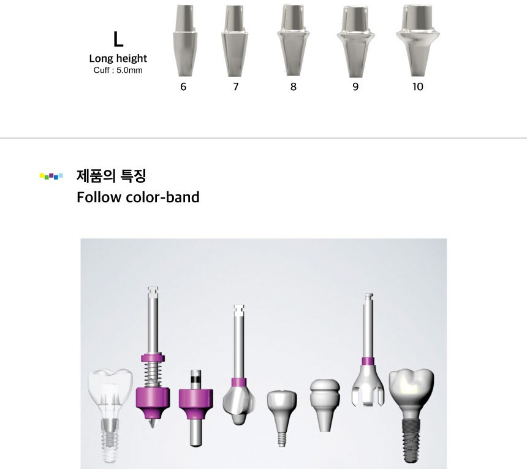

기공소 이야기 · 치과 · 치과기공소
색 하나로,
색 하나로,
힐링에서 보철까지.
수술에서 고른 직경이 힐링 어벗먼트와 어벗, 보철까지 같은 색으로 이어집니다. 치과와 치과기공소가 같은 규격을 보는 방법을 이미지로 정리했습니다.

Follow color-band숫자를 다시
숫자를 다시
찾지 않도록.
심플웨이에서 색은 직경입니다. 서지컬펜 · 서지컬핀 · 본쉐이퍼 · 힐링 · 어벗이 같은 색 밴드로 이어져, 수술에서 고른 규격을 보철 단계에서 다시 찾지 않습니다.
숫자는 제품의 실직경이 아니라 최종 보철의 근원심경을 뜻합니다.
색 = 직경다섯 가지 색,
다섯 가지 색,
다섯 가지 직경.
016노랑
027초록
038보라
049파랑
0510하늘
힐링에서 어벗으로같은 높이 · 직경
Healing 10M 위에 Simple 10M · 9M을 겹친 모습 픽스처 → 힐링 → 어벗 → 보철 SimpleAbutment-Hex 높이 · 직경 
심플 힐링 높이 · 직경 라인업
같은 높이 · 직경
체계.



스캔 준비힐링 단계에서
힐링 단계에서
스캔까지.
- GingivalCap 특수코팅스프레이 없이 스캔 (스토어 상세 기준)
- D-cut(B,L) with fillet직경 · 커프 사이즈 인식
- 높이 표기힐링 상단 표기(예: 8M)로 규격 확인
- HEX 1.20 · 1.28적용 여부는 임플란트 제품 · 모델 단위로 확인
기공소에서는스캔 데이터로
스캔 데이터로
디자인까지.
치과가 구강스캔을 보내면, 기공소는 같은 규격 체계로 보철을 디자인합니다. 규격 어벗으로 맞추기 어려운 케이스는 abuts.fit 의뢰 화면에서 커스텀 어벗으로 넘길 수 있습니다.
높이 · 직경 규격과 적용 HEX는 힐링 · 어벗먼트 안내에서 확인하십시오.

다음 이야기


이어서 읽어 보세요.
기공소 이야기 · 치과기공소
치과기공소, 자체 CNC 없이 커스텀 어벗먼트 생산 맡기는 법 | 어벗츠 abuts.fit
자체 CNC 장비 없이도 치과기공소가 디자인 STL을 올려 커스텀 어벗먼트 생산을 의뢰하는 방법. CNC 밀링 가공, 치수 검사, 출고, 월 정산까지 어벗츠 이용 흐름을 정리했습니다.
치과 이야기 · 치과
치과 기공 의뢰, 전화 대신 화면으로 확인하는 법 | 치과·기공소 어벗츠
치과에서 치과기공소로 보내는 기공 의뢰와 커스텀 어벗먼트 제작 의뢰를 abuts.fit 화면으로 등록하고, 준비·가공·출고·완료 단계와 송장까지 확인하는 방법을 이야기로 정리했습니다.
브랜드 스토리 · 치과 · 치과기공소
치과의사가 직접 만든 치과·기공소 의뢰 플랫폼, 어벗츠 이야기
치과의사이자 개발자인 이준호 원장이 진료실의 불편에서 출발해 만든 치과·치과기공소 제작 의뢰 플랫폼 어벗츠(abuts.fit). 제품과 플랫폼이 동료 치과로 이어지기까지의 이야기.